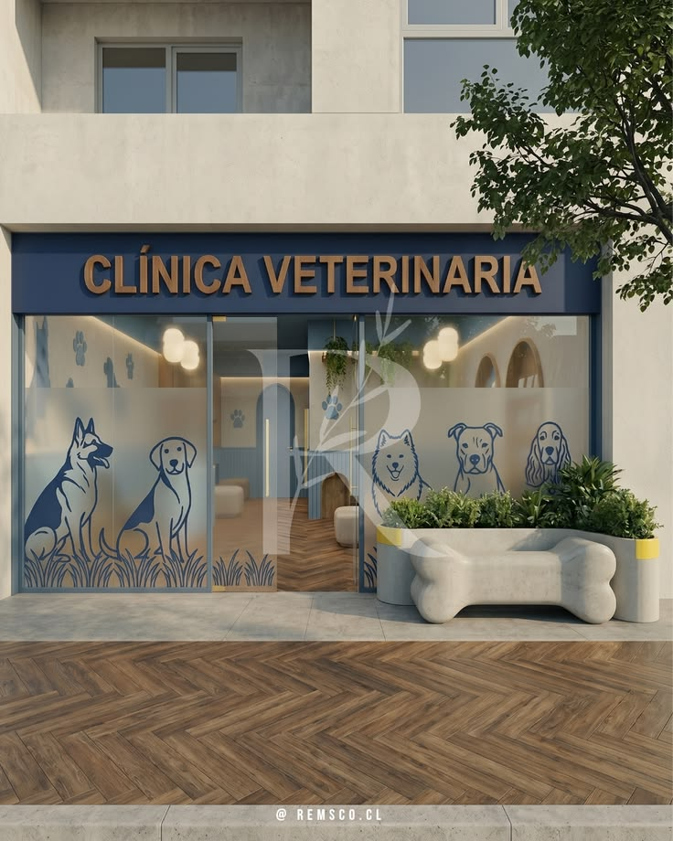

Veterinaria La Mary
Nuestra Veterinaria, fundada en 1997 por el Dr. Amilcar Rodriguez, recibido de la Universidad Nacional de Corrientes ese mismo año, cuenta con servicio de internacion,peluqueria,vacunatorio y emergencias las 24 hs, los 365 dias del año. Desde entonces nos ubicamos en Avenida las Magnolias, 520, en pleno centro de nuestra ciudad.
